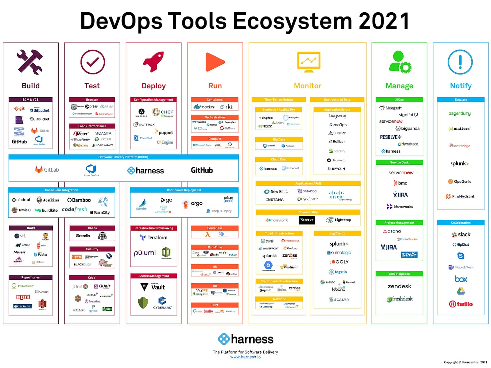

<h3>I am familliar with CI/CD and server</h3>
It was mostly Atlassian products (Jira software), Jenkins, Ansible, Git, NewRelic, ElasticStack, NewRelic, WebdriverIo, Blazemeter, Rollbar, Bash, Nginx, Apache, LiteSpeed, NPM, Node and more
<br><br>

<a href="https://orc.apache.org/docs/types.html">Note: apache orc </a>